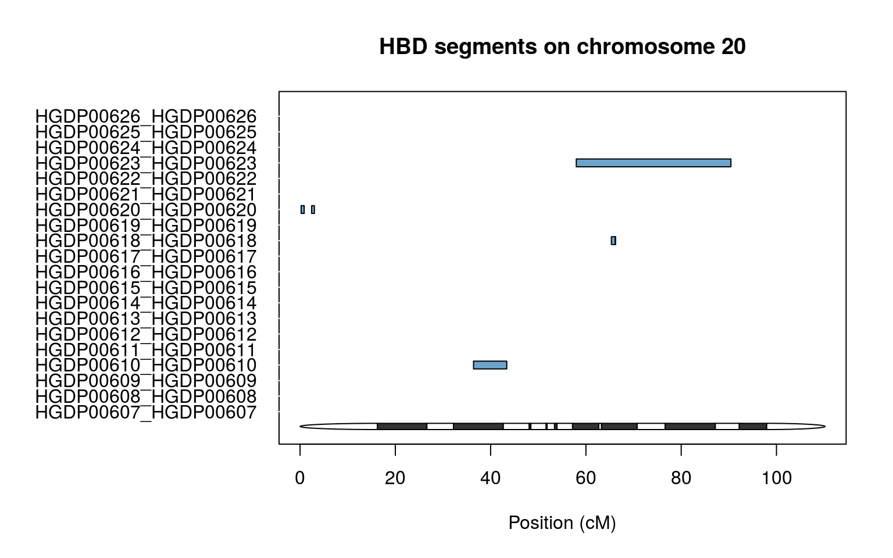
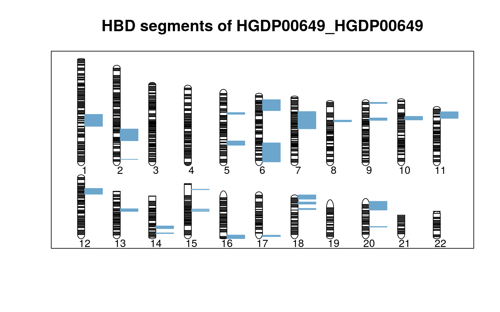
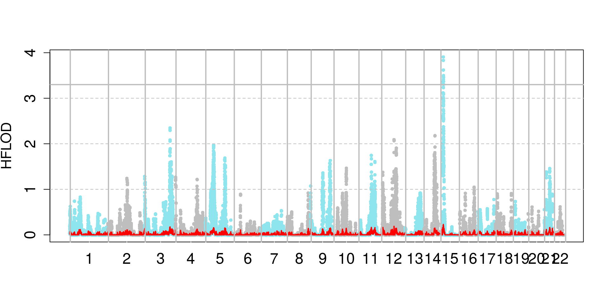
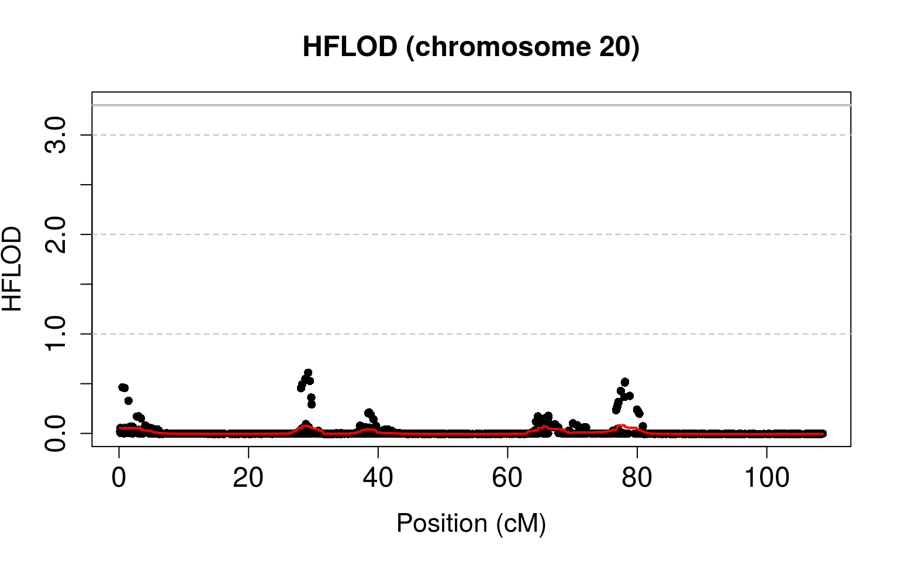

The first thing you should know is that the package Fantasio depends on package gaston, please make sure to have it installed.
Please refer to the vignette of this package for more information.
Since we explained the concept behind the package let’s make an usage example of it. For this we will use the data furnish by the package HGDP.
First and faremost install the package with the following command :
install.packages("Fantasio")After doing that we will need to run the following commands :
require(Fantasio) ## Loading required package: Fantasio## Loading required package: parallel## Loading required package: gaston## Loading required package: Rcpp## Loading required package: RcppParallel##
## Attaching package: 'RcppParallel'## The following object is masked from 'package:Rcpp':
##
## LdFlags## Gaston set number of threads to 8. Use setThreadOptions() to modify this.##
## Attaching package: 'gaston'## The following object is masked from 'package:stats':
##
## sigma## The following objects are masked from 'package:base':
##
## cbind, rbindinstall.packages("HGDP.CEPH", repos="https://genostats.github.io/R/") require(HGDP.CEPH)## Loading required package: HGDP.CEPHFrom now on, we can use the package. Let us first create our bed.matrix object using the data file we load with the package HGDP.CEPH.
filepath <-system.file("extdata", "hgdp_ceph.bed", package="HGDP.CEPH")First create your bed.matrix object with this command :
x <- read.bed.matrix(filepath)## Reading /ext/home/haupe/R/x86_64-pc-linux-gnu-library/3.4/HGDP.CEPH/extdata/hgdp_ceph.rds
## Reading /ext/home/haupe/R/x86_64-pc-linux-gnu-library/3.4/HGDP.CEPH/extdata/hgdp_ceph.bedThis command returns an updated ‘bed.matrix’ object (refer to gaston vignette for more informations and function documentation) :
x <- set.stats(x)## ped stats and snps stats have been set.
## 'p' has been set.
## 'mu' and 'sigma' have been set.Here we only want to work on the Bedouin’s population, so we selected this population with the following command :
x.me <- select.inds(x, population == "Bedouin")Please refer to the manual function of read.bed.matrix, set.stats and select.inds if needed (package gaston).
Please make sure that you have atleast some individuals with a phenotype of 2 (sick), the package only computes HBD, FLOD scores and HFLOD scores with attained individuals :
You can insure that your bed.matrix object is created and have the data needed with :
str(x.me)## Formal class 'bed.matrix' [package "gaston"] with 8 slots
## ..@ ped :'data.frame': 48 obs. of 34 variables:
## .. ..$ famid : chr [1:48] "HGDP00607" "HGDP00608" "HGDP00609" "HGDP00610" ...
## .. ..$ id : chr [1:48] "HGDP00607" "HGDP00608" "HGDP00609" "HGDP00610" ...
## .. ..$ father : int [1:48] 0 0 0 0 0 0 0 0 0 0 ...
## .. ..$ mother : int [1:48] 0 0 0 0 0 0 0 0 0 0 ...
## .. ..$ sex : int [1:48] 2 1 1 1 1 2 2 2 2 1 ...
## .. ..$ pheno : int [1:48] 1 1 1 1 1 1 1 1 1 1 ...
## .. ..$ population : Factor w/ 57 levels "Adygei","Balochi",..: 10 10 10 10 10 10 10 10 10 10 ...
## .. ..$ region : Factor w/ 27 levels "Algeria (Mzab)",..: 12 12 12 12 12 12 12 12 12 12 ...
## .. ..$ region7 : Factor w/ 7 levels "Africa","America",..: 6 6 6 6 6 6 6 6 6 6 ...
## .. ..$ H952 : logi [1:48] TRUE TRUE TRUE TRUE TRUE TRUE ...
## .. ..$ N0 : int [1:48] 56890 58576 58375 60261 53403 61180 54121 55903 61857 62151 ...
## .. ..$ N1 : int [1:48] 192705 189349 190265 186828 203585 183119 199168 196327 183012 180747 ...
## .. ..$ N2 : int [1:48] 394377 395838 394286 396726 386823 399508 390610 391298 398496 401153 ...
## .. ..$ NAs : int [1:48] 301 510 1347 458 462 466 374 745 908 222 ...
## .. ..$ N0.x : int [1:48] 1514 3766 4313 4160 4434 1476 1491 1540 2261 4107 ...
## .. ..$ N1.x : int [1:48] 4936 0 0 0 0 4847 5354 5112 3243 0 ...
## .. ..$ N2.x : int [1:48] 10017 12688 12136 12289 12008 10140 9599 9810 10953 12361 ...
## .. ..$ NAs.x : int [1:48] 5 18 23 23 30 9 28 10 15 4 ...
## .. ..$ N0.y : int [1:48] 0 0 0 0 0 0 0 0 0 0 ...
## .. ..$ N1.y : int [1:48] 0 0 0 0 0 0 0 0 0 0 ...
## .. ..$ N2.y : int [1:48] 0 10 10 10 10 0 0 0 0 10 ...
## .. ..$ NAs.y : int [1:48] 10 0 0 0 0 10 10 10 10 0 ...
## .. ..$ N0.mt : int [1:48] 4 9 19 5 9 9 4 5 19 1 ...
## .. ..$ N1.mt : int [1:48] 0 0 0 0 0 0 0 0 0 0 ...
## .. ..$ N2.mt : int [1:48] 157 143 141 157 153 151 157 153 140 161 ...
## .. ..$ NAs.mt : int [1:48] 2 11 3 1 1 3 2 5 4 1 ...
## .. ..$ callrate : num [1:48] 1 0.999 0.998 0.999 0.999 ...
## .. ..$ hz : num [1:48] 0.299 0.294 0.296 0.29 0.316 ...
## .. ..$ callrate.x : num [1:48] 1 0.999 0.999 0.999 0.998 ...
## .. ..$ hz.x : num [1:48] 0.3 0 0 0 0 ...
## .. ..$ callrate.y : num [1:48] 0 1 1 1 1 0 0 0 0 1 ...
## .. ..$ hz.y : num [1:48] NaN 0 0 0 0 NaN NaN NaN NaN 0 ...
## .. ..$ callrate.mt: num [1:48] 0.988 0.933 0.982 0.994 0.994 ...
## .. ..$ hz.mt : num [1:48] 0 0 0 0 0 0 0 0 0 0 ...
## ..@ snps :'data.frame': 660918 obs. of 17 variables:
## .. ..$ chr : int [1:660918] 1 1 1 1 1 1 1 1 1 1 ...
## .. ..$ id : chr [1:660918] "rs3094315" "rs12562034" "rs3934834" "rs9442372" ...
## .. ..$ dist : num [1:660918] 0.0916 0.0992 0.4963 0.5039 0.508 ...
## .. ..$ pos : int [1:660918] 742429 758311 995669 1008567 1011278 1011521 1011558 1020428 1021403 1038818 ...
## .. ..$ A1 : chr [1:660918] "C" "A" "T" "A" ...
## .. ..$ A2 : chr [1:660918] "T" "G" "C" "G" ...
## .. ..$ N0 : int [1:660918] 3 4 6 16 3 0 3 5 8 3 ...
## .. ..$ N1 : int [1:660918] 23 15 15 21 16 1 21 13 18 10 ...
## .. ..$ N2 : int [1:660918] 22 29 27 11 29 47 24 30 22 35 ...
## .. ..$ NAs : int [1:660918] 0 0 0 0 0 0 0 0 0 0 ...
## .. ..$ N0.f : int [1:660918] NA NA NA NA NA NA NA NA NA NA ...
## .. ..$ N1.f : int [1:660918] NA NA NA NA NA NA NA NA NA NA ...
## .. ..$ N2.f : int [1:660918] NA NA NA NA NA NA NA NA NA NA ...
## .. ..$ NAs.f : int [1:660918] NA NA NA NA NA NA NA NA NA NA ...
## .. ..$ callrate: num [1:660918] 1 1 1 1 1 1 1 1 1 1 ...
## .. ..$ maf : num [1:660918] 0.302 0.24 0.281 0.448 0.229 ...
## .. ..$ hz : num [1:660918] 0.479 0.312 0.312 0.438 0.333 ...
## ..@ bed :<externalptr>
## ..@ p : num [1:660918] 0.698 0.76 0.719 0.448 0.771 ...
## ..@ mu : num [1:660918] 1.396 1.521 1.438 0.896 1.542 ...
## ..@ sigma : num [1:660918] 0.61 0.652 0.712 0.751 0.617 ...
## ..@ standardize_p : logi FALSE
## ..@ standardize_mu_sigma: logi FALSEThis object contains two slots :
More information in the vignette of the gaston package.
We created a wrapper to make the usage of the package more simple.
The following function calls two different functions : createSegmentsListBySnps and createSegmentsListBySnps. The first function createSegmentsListBySnps is used to create a list of segments though the genome. The second function makeAllSubmapsBySnps or makeAllSubsmapsbyHotspots is used to create submaps.
The segments arguments accept only two options : Hotspots or Distance which correspond to the method implemented in the package.
We implemented in the package Fantasio two differents methods in order to create the submaps :
By “Hotspots” : *With this method we use a hotspots files to segment our genome, each segment contains several markers. Once this step is done we then loop over the segments and pick one marker randomly. By
doing this process we obtain a submap (a list of marker).
By “Distance” : *With this method we use the gaps between markers to segment our data, each segment contains several
markers. We then create mini-segments for each marker (by default we create 20 segments, each containing at least 50 markers, if the creation of 20 segments in each we have 50 markers is impossible we do not create mini-segments). After this process is done, we loop over the mini-segments, pick a random marker and go through the mini-segments by picking the nearest marker after taking a step (default is 0,5 cM) downstream and upstream the mini-segments.
submaps2 <- Fantasio(bedmatrix=x.me, segments="Hotspot", n=5, verbose=FALSE, list.id = "all") submaps3 <- Fantasio(bedmatrix=x, segments="Hotspots", n=100, n.cores=20, recap.by.segments=TRUE, n.consecutive.marker=1, list.id = "all")submaps4 <- Fantasio(bedmatrix=x.me, segments="Distance", n=5, verbose=FALSE, list.id = "all")In order to use the segment.option argument you need to pass a list of arguments, each variable names in the list must be an argument name in the function. The function that will be called is either createsSegmentsListBySnps if segments argument is equal to “Distance” or createSegmentsListByHotspotsif segments argument is equal to “Hotspots” and the arguments list will be pass to it.
l <- list(number_of_marker=50) #default is 0
submaps5 <- Fantasio(bedmatrix=x, segments="Hotspots", segment.options=l, n=5, recap.by.segments=TRUE, list.id = "all")We will now create segments, which will be use to create the submaps later, further explication below, for now use this command :
s <- createSegmentsListByHotspots(x.me)## You are currently using version hg19 of hotspot
## Gathering all hotspots for the genome : ......................
## Gathering all the genome's markers : ......................
## Finding which markers are between two hotspots : ......................This function creates a list of chromosomes, in each, you have a list of several segments created thanks to the hotspots file given in argument (files are given with the package), in each segments you have SNPs index.
You can watch a summary of what was done with :
segmentsListSummary(s)## chromosome number_of_segments number_of_markers
## 1 1 904 48532
## 2 2 895 52722
## 3 3 750 43507
## 4 4 702 39040
## 5 5 721 39933
## 6 6 719 42184
## 7 7 564 34754
## 8 8 589 36417
## 9 9 563 30276
## 10 10 669 33427
## 11 11 537 31255
## 12 12 601 31039
## 13 13 475 24595
## 14 14 401 20926
## 15 15 383 19098
## 16 16 429 19028
## 17 17 374 16052
## 18 18 442 19496
## 19 19 217 10397
## 20 20 384 16228
## 21 21 225 9301
## 22 22 207 9379This function creates a dataframe with three colums :
We will now head toward the creation of submaps using the following commands :
submaps <- makeAllSubmapsByHotspots(x.me, 5, s, verbose=FALSE, list.id = "all") For the sake of clarity we have only created 5 submaps, but generally we do 100.
This function will creates 5 submaps, all the parameters can be modified (use args(makeAllSubmapsByHotspots) for more informations).
The variable submaps becomes an list.submaps object, you can watch the different elements of it with :
str(submaps) #careful it can become huge depending on your data sizesThis object contains all the results of the different computation executed during the process of creating n submaps. Here is a complete description of each structure in this object :
str(submaps@segments_list) #careful it can become huge depending on your data sizessnsp.matrix or an hotspots.matrix (here we use the hotspots method). Each submaps contains 15 slots :str(submaps@atlas)str(submaps@likelihood_summary)str(submaps@estimation_summary)str(submaps@marker_summary)head(submaps@submap_summary)## FID IID STATUS SUBMAPS QUALITY F_MIN F_MAX
## 1 HGDP00607 HGDP00607 1 5 / 5 100 0.02088305 0.02800531
## 2 HGDP00608 HGDP00608 1 5 / 5 100 0.03774849 0.04296050
## 3 HGDP00609 HGDP00609 1 5 / 5 100 0.03845347 0.05142789
## 4 HGDP00610 HGDP00610 1 5 / 5 100 0.04731414 0.05397126
## 5 HGDP00611 HGDP00611 1 1 / 5 20 0.01273263 0.01273263
## 6 HGDP00612 HGDP00612 1 5 / 5 100 0.05512183 0.06824553
## F_MEAN F_MEDIAN A_MEDIAN pLRT_MEDIAN INBRED pLRT_inf_0.05
## 1 0.02482191 0.02598715 0.15191670 1.134487e-24 TRUE 5
## 2 0.04035226 0.04032003 0.07460304 1.720375e-59 TRUE 5
## 3 0.04355988 0.04194772 0.11711796 4.134690e-52 TRUE 5
## 4 0.05106922 0.05087772 0.15664735 1.072055e-59 TRUE 5
## 5 0.01273263 0.01273263 0.95887555 2.210185e-04 TRUE 1
## 6 0.06243892 0.06162984 0.31285829 1.024974e-44 TRUE 5submaps@HBD_recap[1:10, 1:10] # an individual * marker matrixsubmaps@FLOD_recap[1:10, 1:10] # an individual * marker matrixstr(submaps@HBD_segments[[1]])str(submaps@HFLOD)str(submaps@bedmatrix)bySegments : a boolean indicating wheater the creation of summary statistics was made by segments or not
unit : the unit of the marker (cM or Bp).
gap : the value of the gap used to pick marker when doing submaps by Distance.
We implemented a second inner method of the “By Hotspots” method. The only paramater that changes is recap.by.segments, it is put to TRUE. In the default “Hotspot” method the HBD probabilities and FLOD scores are computed for each marker randomly selected on each segment for the n submaps.
With the “Hotspot by segment” method HBD probabilities and FLOD scores correspond to the mean of HBD probabilities and FLOD score of each marker randomly selected on a segment for the n submaps in such a way that there is only one value for a segment.
We use the same segment list that is used before (s).
As said before the only argument that changes is “recap.by.segments”, it is put to TRUE.
submaps0 <- makeAllSubmapsByHotspots(x.me, 5, s, verbose=FALSE, recap.by.segments = TRUE, list.id = "all")We will now create segments, which will be use to create the submaps later :
s1 <- createSegmentsListBySnps(x.me)## Finding segments for the genome : .......................
## Finding which markers are between two segments: .......................
## Finding mini segments .......................This function creates a list of chromosomes, in each, you have a list of several segments created thanks to the the gaps between markers, the value of the gap is given in argument, in each segments you have SNPS index. The function creates an object which will contains three slots :
You can watch a summary of what was done with :
segmentsListSummary(s1)This function creates a dataframe with three colums :
We will now head toward the creation of submaps using the following commands :
submaps1 <- makeAllSubmapsBySnps(x.me, 5, s1, verbose=FALSE, list.id = "all")The variable submaps becomes an list.submaps object, you can watch the different elements of it with :
str(submaps1) #careful it can become huge depending on your data sizesWe implemented a paralellism method to make the creation of the submaps more efficient (we paralellised the creation of the submaps, that is to say, the selection of markers). Make sure to have a Linux environment or one that can support the usage of multiple CPU.
In order to use it, use the n.cores argument, i.e : the number of CPU that will be used to make the differents submaps in the following functions :
submaps6 <- Fantasio(bedmatrix=x.me, segments="Hotspot", n=5, verbose=FALSE, n.cores=10, list.id = "all")HBD.plot.chr(submaps, chr=20)
HBD.plot.id(submaps, individual.id = "HGDP00649", family.id = "HGDP00649")
HFLOD.manhattan.plot(submaps)
HFLOD.plot.chr(submaps, chr=20)
Copyright © 2018 INSERM. All rights reserved.